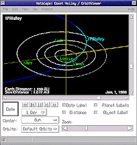

Rather than having to create the appropriate HTML for the
OrbitViewer
applet in a static web page, this page dynamically invokes
the applet near the end of the current page given input via
a form. Moreover, orbital element text can be obtained from
the Minor Planet
Centre (MPC) web site and the form data populated automatically,
an example of which is given below. Object invocation also adds to
a popup menu for later retrieval of orbital elements. Browser
cookies are used to persist menu items with an expiry of 90 days.
|
 |